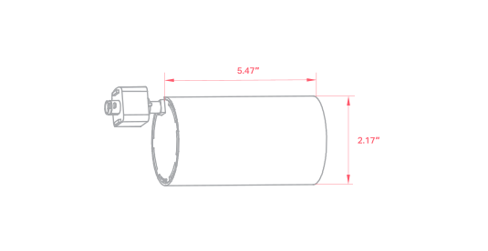
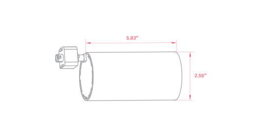
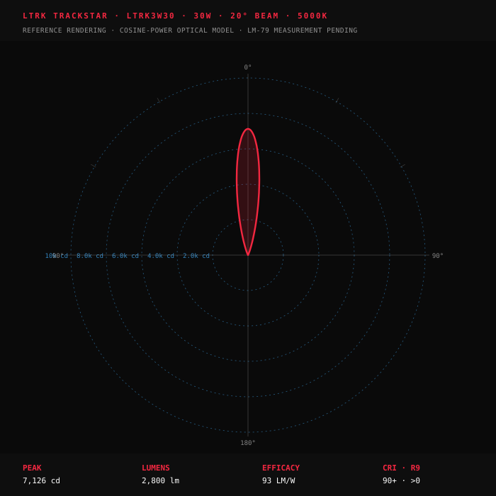

Listed
Listed
RoHS
Premium
Wet Loc
Architectural-grade track head fitting both Halo H and Juno J track via trackⒶDAPT mount swap. CRI 90+ truⒶCOLOR at every CCT. beamⒶDJUST 24°-65° field-rotatable lens. 2 watt classes × 5-CCT × 6 watt positions per SKU. 5-year · L70 @ 50,000 hours.
| 3-WATTselect | Lumens | lm/W | 5-CCTselect | Beam Range |
|---|


Five clips · ~30 seconds total — from the product reveal through 5-CCTselect, beamⒶDJUST, and trackⒶDAPT demos to the 350° horizontal aim and 90° vertical pivot. Each clip lands one of the spec-grade hammers in motion. Tap a tab to jump to a clip.
Trackstar's optical collar rotates from narrow accent (20°) through mid-narrow (30°) through general retail (40°) to wide wash (50°) — continuously, on the head, in the field. No reflector swap. No re-spec. Both LTRK3W20 and LTRK3W30 ship with the identical 20°-50° beam range — the difference between classes is driver wattage, not optical distribution. Juno Trac-Master and competing brands Stasis fix the beam at one angle per part number; category competitors bundles adjustable beam only in the Paloma museum-spec line. Pick a class and a beam below to see the application fit at 8-ft mounting.
Highlights & Features
Seven highlights — three premium properties bundled in one SKU: 5-CCTselect, 20°-50° beamⒶDJUST, CRI 90+ truⒶCOLOR. trackⒶDAPT H + J track. 350° × 90° gimbal. DampGuard™. 60 install configurations from 4 catalog lines.
trackⒶDAPT
trackⒶDAPT is the system underneath the head — Surface-mount (TSM) for retrofit drop-in, Embedded (TEM) for flush integration in new architectural ceilings, with the same head fitting both H-Type and J-Type 1-circuit infrastructure. Seven connector layouts cover any track geometry.
Surface-mounted track segment. Drops onto existing junction-box infrastructure for boutique-retail rebuilds, gallery refreshes, and hospitality renovations where the ceiling is fixed. Standard 1-circuit · 120V · 16A continuous load · UL Listed. Profile visible — 0.85″ tall × 1.30″ wide. Black or White finish to match the head.
Browse trackⒶDAPT system →Photometric Distribution
Reference polar plots rendered from a cosine-power optical model calibrated against industry-typical spec-grade architectural track values. The 60-file IES bundle is in lab measurement now — polar curves refresh from measured candela tables when the data ships.

0 · LM-79 lab measurement pending from supplier" />Ten line-item components complete the trackDAPT install — 2 track types, 7 connector layouts, and 1 tail plug. Same 1-circuit 120V / 16A interface across all 10 components. Track is sold separately.
Pick a SKU class and a finish. The 3-WATTselect (10/15/20W on LTRK3W20 · 20/25/30W on LTRK3W30) and 5-CCTselect (2700/3000/3500/4000/5000K) are dip-switch field-set on every head — not in the catalog SKU. CRI 90+ truⒶCOLOR™ R9>0 standard · 20°-50° beamⒶDJUST optical-collar zoom · TRIAC + Phase Dim · DampGuard™ damp-location. Required fields marked with *. See the legend below for ★ / QS / MTO meanings.
Everything specifiers, contractors, and project managers need to spec, install, and certify the Trackstar — datasheet, IES bundle, installation guide, and configuration-stamped submittal. All 6 documents URL-pending from supplier — IES bundle in LM-79 lab measurement.
Trackstar is the planoⒶRCH brand vertical's accent + feature track light. Pair it with the LCDL dowpremium-tier networked lighting control family — Astra for spec-grade architectural ambient, Spectra for high-output integrated-J-Box installations, Solstice for value-engineered ECO can-less. Same planoⒶRCH compliance language across the family, same QuickShip distribution, same 5-year warranty.


Trackstar handles the accent + feature illumination on track infrastructure. These cross-line fixtures handle the rest of the install — same factory, same QuickShip distribution, same 5-year warranty promise. Specify them together for a coherent lighting package across the entire commercial-architectural envelope: pendants over the gallery floor, panels in the back-of-house, post-tops in the plaza outside, strip lights in the parking deck.


Five US warehouses ship Trackstar QuickShip configurations in 3-5 days; trackⒶDAPT layout components ship per project as line-item orders from the §8 grid. Layout requests come back inside 48 hours. Quotes, sample requests, and rebate matches reply same business day. No portal-as-the-only-channel: you get a person.
Trackstar qualifies for utility rebate programs at the DLC Listed tier (confirmed via Rebate Center per CFG-RBT-2) — published 90-100 LM/W efficacy clears the DLC Listed floor. For boutique retail, gallery, and curated hospitality installations where multi-fixture density is high, the per-fixture rebate stack adds up to meaningful project offset. Pair with the §11 planoⒶRCH dowpremium-tier networked lighting control family for a coherent rebate-eligible package across the install.